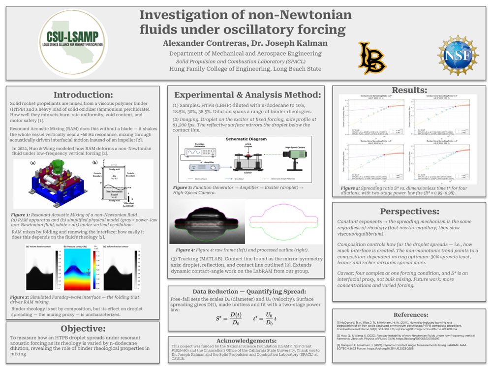
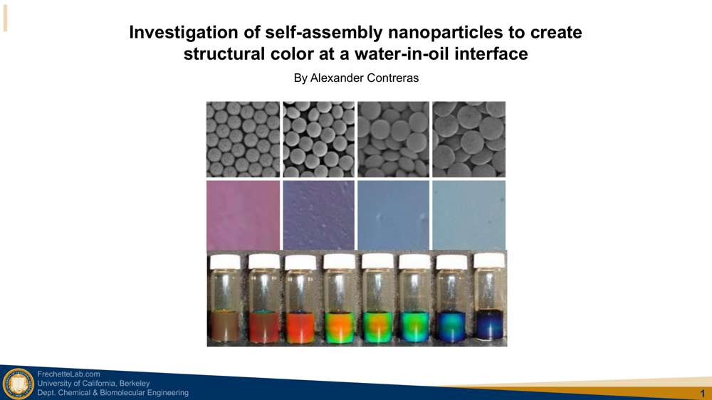

EXPERIENCE
Experimental and computational research in combustion, soft matter, and high-temperature flows.

Conducted benchtop experiments evaluating binder wettability for solid rocket applications under Dr. Joseph Kalman. Automated MATLAB data reduction for 100+ high-speed test videos — extracting time-resolved metrics and standardized plots — cutting processing time by ~50%. Maintained hardware inspections and QC records to improve repeatability.

Processed microscopy data in MATLAB to quantify droplet size, volume fraction, and water transport across oil/surfactant trials. Designed microfluidic device concepts in SolidWorks to improve flow control and droplet repeatability, and presented results to 50+ attendees at the Berkeley 2022 Summer Symposium.
Developing a repeatable simulation and post-processing workflow for propulsion-relevant non-equilibrium post-shock analysis. Automated parameter-sweep case generation, batch execution, and output parsing on Linux with Python — reducing end-to-end turnaround by ~60% across 50+ cases — and standardized post-processing metrics to hold <2% variation across re-runs.